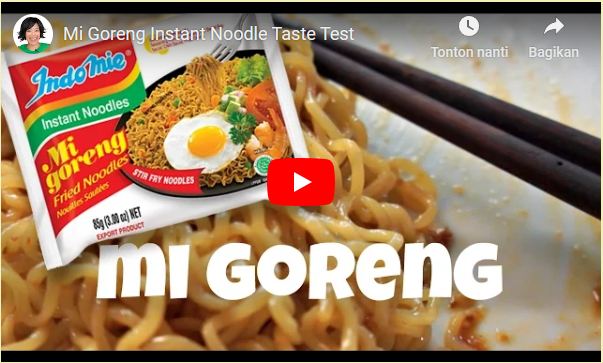
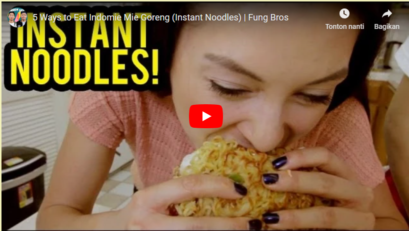
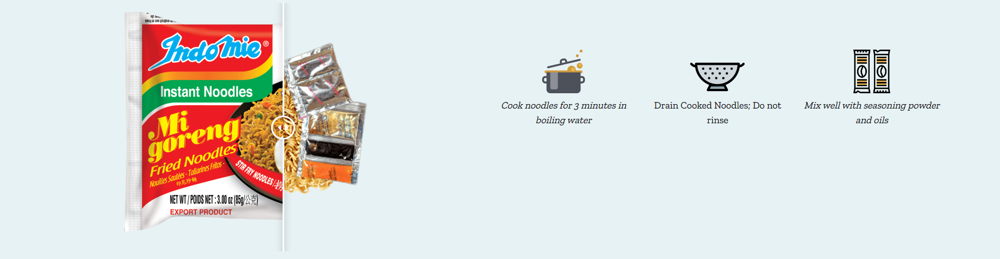
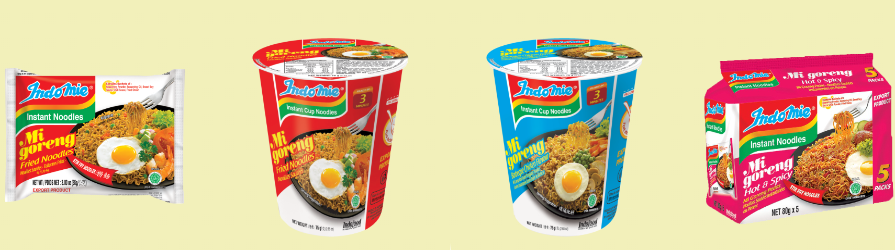
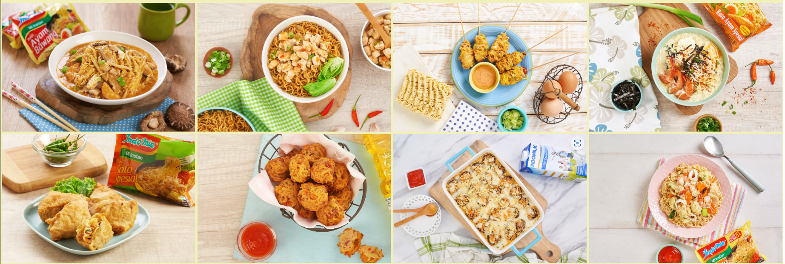

About Mie
Indomie has come a long way since its humble beginnings in
the 1970’s. Our noodles are made from carefully selected
ingredients, the best quality flour and fresh spices from the
natural resources of Indonesia giving it a unique and
delicious flavour.
Indomie is available in over 100 countries
|
Indomie is produced by Indofood, the pioneer of instant noodles in Indonesia and is one of the largest instant noodles manufacturers in the world. Indomie comes in many varieties from our classic soup flavours to our most popular dry noodle flavour Indomie Mi Goreng! |
|---|
STAPLE FOODS |
|
|---|---|
Our Best-Selling Noodles
Indomie Mi Goreng is the most popular Indomie flavour
|
 |
|
|
NEW RECIPES TO TRY |
|  |
Have you tried new ways to eat your Indomie?Did you know that Indomie can be enjoyed in many ways?
|
How to cook our signature Mi Goreng
Our Products
Learn More
Our Recipes
